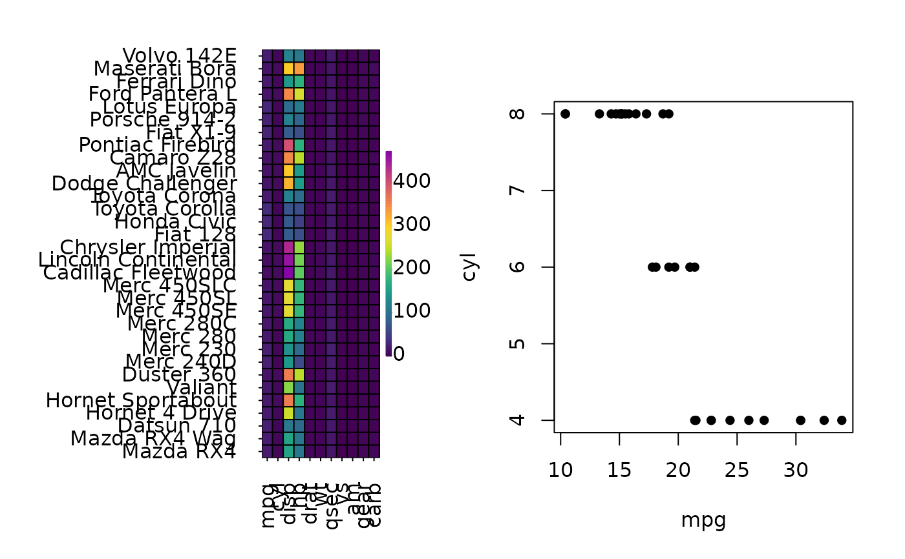

heat_map_custom() is similar to cheat_map_save() with the
exception that it doesn't write the plot to a file. heat_map_custom()
opens a new graphics device and sets the desired layout in preparation for
the addition of heatmaps and other plot objects. Once the custom plot is full
users MUST run cyto_plot_complete() to close the graphics device and
reset any heat_map() related settings (see example).
Usage
heat_map_custom(popup = TRUE, popup_size = c(8, 8), layout = NULL, ...)Arguments
- popup
logical indicating whether a popup graphics device should be opened.
- popup_size
indicates the size of the popup graphics device in inches, set to
c(8,8)by default.- layout
either a vector of the form c(nrow, ncol) defining the dimensions of the plot or a matrix defining a more sophisticated layout (see
layout). Vectors can optionally contain a third element to indicate whether plots should be placed in row (1) or column (2) order, set to row order by default.- ...
additional arguments passed to
heat_map_new().
Examples
heat_map_custom(
popup = FALSE,
layout = c(1,2)
)
heat_map(
mtcars
)
plot(
mtcars[, 1:2],
pch = 16
)

heat_map_complete()